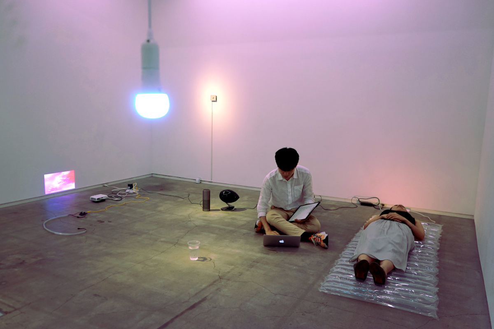
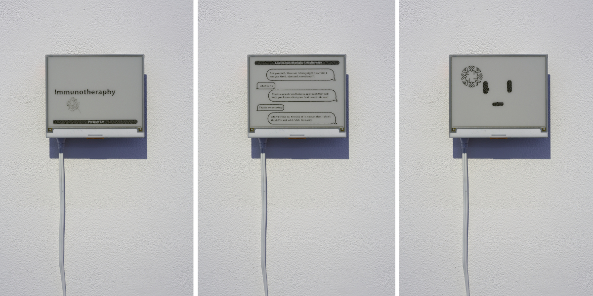
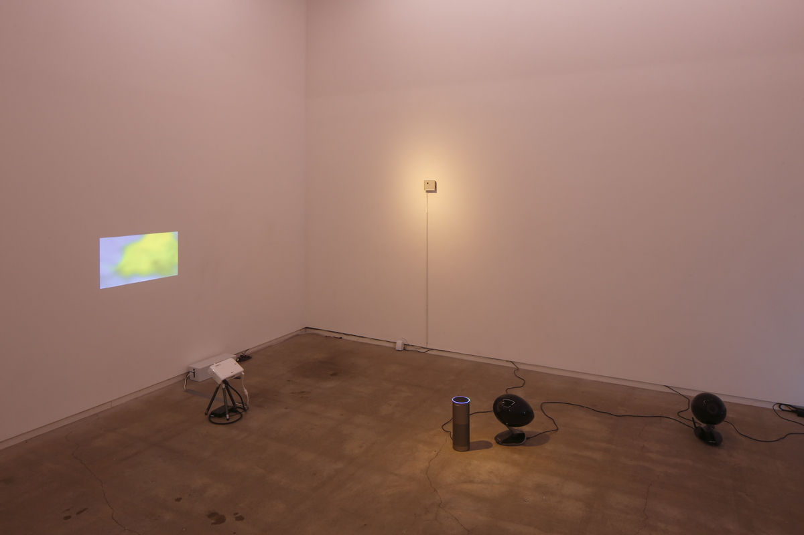

Immunotherapy
Creative & technical collaboration on Nozomu Matsumoto & Nile Koetting's installation Immunotherapy. This work considers advanced issues in Japan, such as nursing care and communication through social robots in a super-aging society, paying attention to digital technologies, evolving human behaviours, and the interactive relationship that mutually affects both the environment and its inhabitants. With these elements in dialogue, the installation becomes a therapy session, populated by household audiovisual technologies, scientific mascots weave through musical reproductions to create an ever-changing soundtrack for our relationship with science and technology.
Raspberry PI, e-ink display, custom Amazon Alexa skill, smart light bulbs, Max/MSP, 3D print & modeling
Exibited from 31 August - 29 September 2019 at TALION gallery in Tokyo, Japan.
 